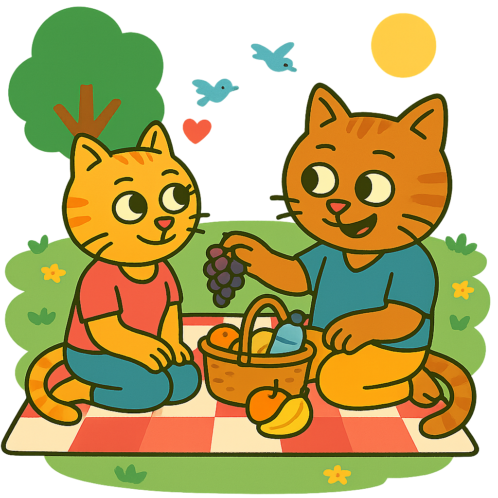
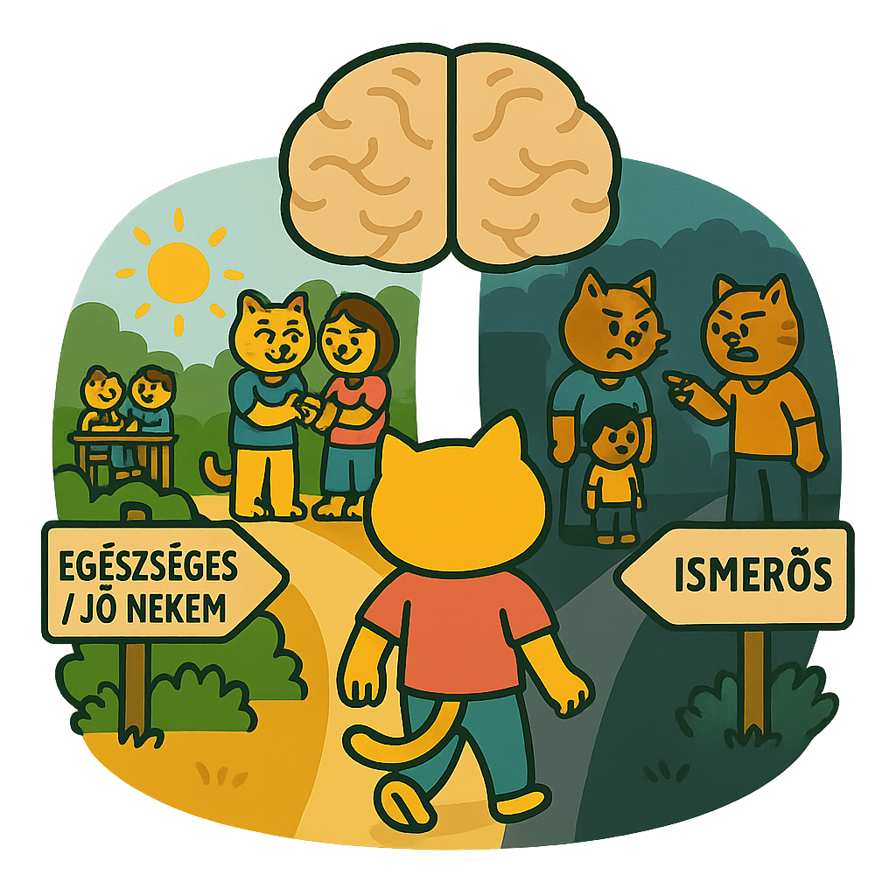
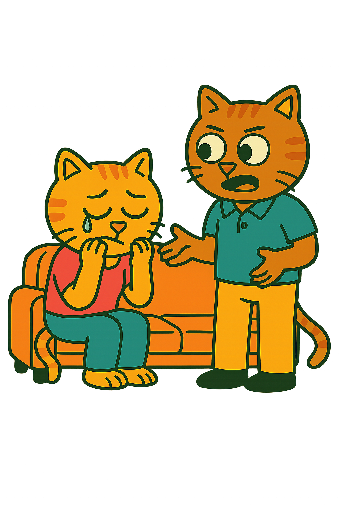
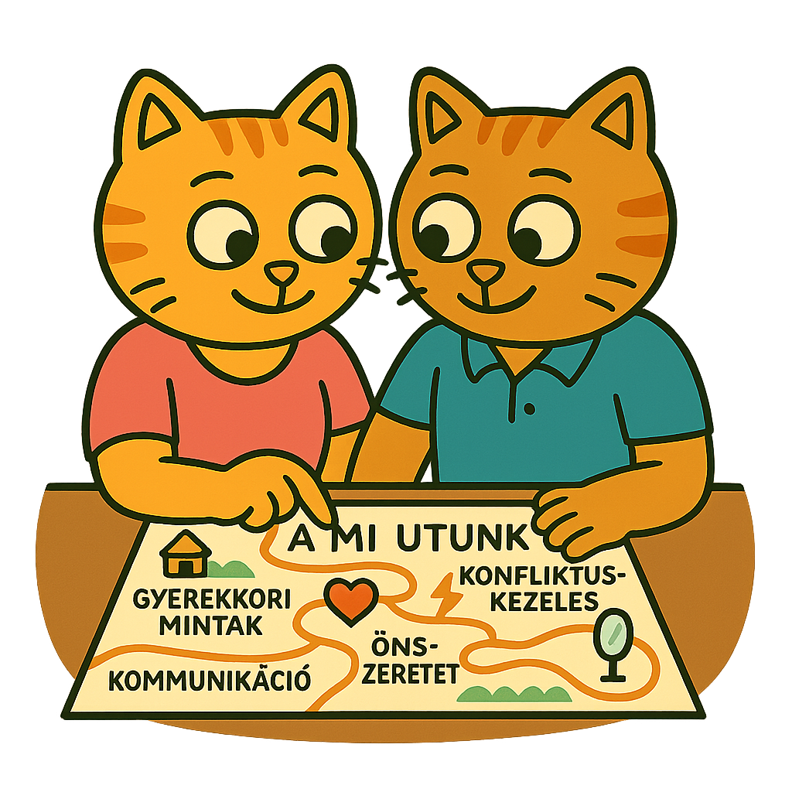

Sokan azt hisszük, a szerelem vak, de valójában nagyon is „lát".
Olyan mintákat követ, amiket gyerekkorunkban tanultunk meg, gyakran teljesen tudattalanul.
Ezek a belső térképek határozzák meg, kivel maradunk tartós párkapcsolatban.
Ebben a cikkben ezt a témát járjuk körül, a végén pedig egy gyors kvíz
segít megnézni, mennyire értetted meg a lényeget.
A párválasztás rejtett térképe
(avagy: nem, nem csak a külseje miatt)
„Az első randin valahogy ismerős volt."
„Olyan érzésem volt, mintha már régóta ismerném."
„Nem is tudom... csak vonzott valami benne."
Igen. Ezek azok a mondatok, amik elsőre romantikusnak tűnnek. Aztán 5 évvel később,
egy vita közepén, amikor a másik pont úgy néz rád, mint anyád (vagy apád),
már nem olyan romantikusak.

Szóval... mi is történik itt valójában?
A pszichológia ezt a folyamatot, amikor úgy érezzük, a másikat nekünk teremtették
a „belső térképre" vezeti vissza.
Gyerekkorodban -- anélkül, hogy észrevetted volna -- kialakítottál egy modellt arról,
milyen egy szeretetteljes kapcsolat,
hogyan kell szeretni, és
mire számíthatsz másoktól.
Ezt a modellt nem tanultad tankönyvből. Tapasztaltad.
• Ha a szeretet feltételekhez volt kötve: lehet, hogy ma is
bizonyítanod kell, hogy „elég jó vagy".
• Ha a közelség fájdalommal járt: lehet, hogy ma is olyan embereket
választasz, akik mindig egy kicsit elérhetetlenek.
• Ha a szeretetet csendben, gesztusokban fejezték ki: lehet, hogy
zavarba jössz attól, ha valaki sokat beszél az érzéseiről.
És a csavar?
Az agyunk hajlamos az ismerőst választani, és nem feltétlenül azt, ami jó nekünk.

Miért fontos, hogy tudj a belső térképedről?
Mert a hosszú távú párkapcsolat nem a véletlen műve.
Sőt, néha a párod nem is „a nagy Ő", hanem a nagy Ismerős.
Olyan kapcsolati dinamikákat keresünk újra és újra, amelyek valahonnan már ismerősek
-- és így „otthonosak", még akkor is, ha fájdalmasak.
Azaz azért is maradhatunk benne egy kapcsolatban hosszabb távon, mert ismerősek
a kapcsolat dinamikái számunkra. És ami ismerős, ott tudjuk, hogy milyen szerepet
kell játszanunk, hogyan "kell" viselkednünk, még akkor is, ha ez sokszor nem minket szolgál.
(lehet, hogy felvetődik benned a kérdés, de hogy jön ide a kémia?
ne tagadjuk le, ahhoz, hogy egy kapcsolat egyáltalán beinduljon szükséges,
hogy legyen köztetek kémia, és ha ez nagyon jól működik két ember között,
akkor a kapcsolat sokáig tud működni két egyébként nem annyira összeillő ember között is.)

Mini önreflexió
Kihez voltál gyerekként legközelebb?
Milyen volt vele a kapcsolatod?
Ha most visszanézel: mit tanultál ebből arról, hogy milyen vagy te szeretve?

Most akkor jól választottam vagy nem?
Nem az a cél, hogy megkérdőjelezd, jól választottál-e,
hanem hogy elkezdd látni: miért pont ő,
és milyen belső mintázataidat aktiválja a kapcsolatotok.
Ha felismered, hogy:
• nem véletlen, hogy beleszerettél,
• nem véletlen, hogy pont ezekkel a nehézségekkel küzdötök,
• és nem muszáj végigvinni ugyanazt a forgatókönyvet,
amit gyerekként láttál...
akkor máris elindultál a tudatos kapcsolat felé.
Kvíz: Mennyire értetted meg a lényeget?
Válaszolj a kérdésekre és nézd meg, mennyire sajátítottad el a cikk tartalmát!
1. Mi az a „belső térkép", amire a párválasztásunk gyakran épül?
A) Egy ösztönös vonzalom az ellentétes személyiségekhez
B) A gyerekkorban megtapasztalt kapcsolati minták összessége
C) Egy tudatos lista arról, hogy mit keresünk egy partnerben
2. Miért tűnhet egy új partner "ismerősnek" már az első randin?
A) Mert sokan hasonlókat keresnek, mint amilyenek ők maguk
B) Mert a külső jegyek alapján hasonlítanak egy idealizált képre
C) Mert tudattalanul is hasonlít valakire, aki meghatározó volt a gyerekkorban
3. Mi a pszichológiai magyarázata annak, hogy vonzódunk az „elérhetetlen" emberekhez?
A) Mert az ilyen emberek mindig titokzatosabbak és izgalmasabbak
B) Mert ha a gyerekkorban a közelség fájdalommal járt, ez válik ismerőssé
C) Mert az önbizalomhiány ilyen típusokat vonz
4. Melyik állítás igaz a hosszú távú párkapcsolat működésére?
A) Teljesen véletlenszerű, kivel tudunk hosszú távon együtt maradni
B) Akkor működik, ha a felek nem hasonlítanak a szüleikre
C) Sokszor azért maradunk benne, mert a kapcsolat dinamikája ismerős
5. Melyik tényező nem segít felismerni a belső térkép működését a kapcsolatunkban?
A) Hogy milyen érzéseket kelt bennünk a társunk viselkedése
B) Hogy milyen gyerekkori kapcsolati élmények formáltak minket
C) Hogy milyen gyakran ír nekünk üzeneteket napközben
6. Mi a fő oka annak, hogy érdemes felismerni a saját belső térképünket?
A) Hogy gyorsabban találjunk új partnert
B) Hogy elkerüljük a csalódásokat a jövőben
C) Hogy tudatosabban építhessünk kapcsolatokat, ne csak ismételjük a múltat
7. Hogyan befolyásolja a kémia a kapcsolat dinamikáját a cikk szerint?
A) Ha nincs kémia, biztosan nem működik a kapcsolat
B) A kémia miatt hosszú ideig együtt lehet maradni két össze nem illő ember is